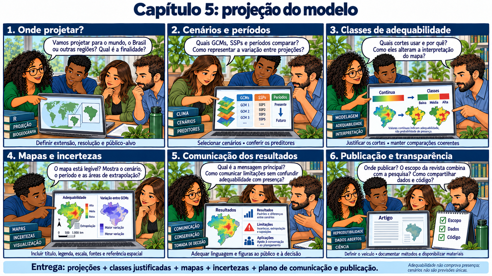

CAPÍTULO 14 · P · Prediction
Projetar no espaço e no tempo
A relação ajustada viaja; os pressupostos e a incerteza viajam com ela.
Base no curso: slides 381–410; 390; 403–407.
A equipe abre os cenários de 2061–2080. Um pesquisador começa a dizer “a espécie estará aqui”. A colega reformula: “Sob estas entradas climáticas e hipóteses, o modelo projeta esta adequabilidade potencial.” A legenda ganha cenário, período e limites.

Presente, outro lugar e outro clima
A predição aplica o modelo ajustado a um conjunto de camadas. Recortar uma superfície já prevista para outra extensão difere de recalcular com entradas de outra fonte, período ou resolução. Para comparar cenários, confira identidade, ordem, unidades, resolução e alinhamento dos preditores e mantenha claras as transformações utilizadas.
ens.predict.W <- sdm_predict(
models = ens.fit.model,
pred = predictors.model,
con_thr = FALSE, clamp = TRUE, pred_type = "cloglog"
)O que está configurado para o futuro
CMIP6.models <- c("MIROC6", "MRI-ESM2-0")
CMIP6.ssps <- c("245", "370")
CMIP6.times <- c("2061-2080")
# Opcional: diagnosticar novidade ambiental futura no Brasil por GCM.
# Aumenta o tempo de execução; clamping não substitui esse diagnóstico.
evaluate.future.extrapolation <- FALSEA configuração examinada usa MIROC6 e MRI-ESM2-0, SSP2-4.5 e SSP3-7.0, para 2061–2080. O script combina projeções dos GCMs por média aritmética e calcula dispersão entre elas. Dois modelos climáticos representam uma parte limitada da incerteza; o desvio padrão entre eles não resume incerteza das ocorrências, algoritmos, emissões ou parâmetros.
Preditores sem projeção climática, como elevação e solo quando incluídos, permanecem constantes. Não há restrição de dispersão. Assim, ganho e perda se referem à classificação da adequabilidade potencial, sem demonstrar colonização, extinção local ou impacto econômico.
Novidade ambiental e extrapolação
Uma projeção pode encontrar valores fora dos intervalos de treinamento ou combinações novas entre variáveis. MESS, ExDet, MOP e diagnósticos do workflow abordam aspectos diferentes dessa novidade; não são nomes intercambiáveis de uma única avaliação. O clamping limita certas respostas, mas não valida a transferência.
Limiar e mapa de mudanças
# Limiares do mapa final, derivados das presenças de calibração.
# Não são validação independente. Para avaliar MTP/MTP10 por partição, calcular
# cada limiar nas presenças de treinamento do fold e aplicá-lo aos dados de teste.
MTP <- min(presence.points.prob$Suitability)
MTP10 <- as.numeric(quantile(presence.points.prob$Suitability, 0.10, type = 1))
ens.median <- median(presence.points.prob$Suitability)
# Registra a base e os valores usados nos mapas e nas classes.
calibration.thresholds <- data.frame(
Metric = c("MTP", "MTP10", "Median"), Value = c(MTP, MTP10, ens.median),
Presences = nrow(presence.points.model), Dataset = "presence.points.model",
Prediction = "Final fitted model or ensemble; continuous suitability",
Method = c("minimum", "quantile 0.10; type=1", "median")
)O limiar do cenário base é mantido para comparar mapas futuros. Isso torna o critério consistente, mas a área classificada ainda depende do corte escolhido. Apresente o contínuo junto ao binário quando isso ajudar a evitar que pequenas diferenças perto do limiar pareçam mudanças ecológicas abruptas.
Discussão
Que parte da incerteza você consegue estimar com os dados atuais? Que componente continua sem representação? Use respostas separadas para não chamar um único mapa de dispersão de “incerteza total”.